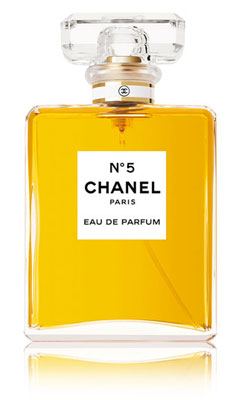

The Little Black Dress
When Chanel's lover Boy capel died in a car accident while she was waiting for him, Chanel found only one remedy to heal her grief. She designed a very simple little black dress that she could wear everyday to remember her terrible loss. The little black dress was born. |
Chanel N°5 perfumeIn 1920, when presented with small glass vials of scent numbered 1–5 and 20–24, for her assessment, she chose the sample composition contained in the fifth vial. Chanel told her master perfumer: "I present my dress collections on the fifth of May, the fifth month of the year and so we will let this sample number five keep the name it has already, it will bring good luck." |
 |